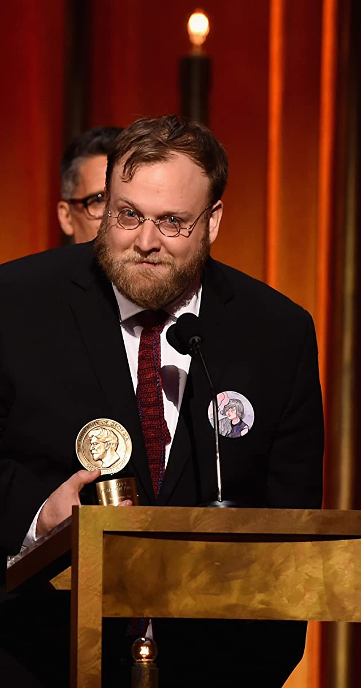
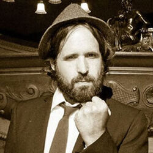

Pendelton Ward
Es un productor, guionista, animador y actor de voz que trabaja para Cartoon Network y Frederator Studios. Es conocido por haber creado la serie Adventure Time, ganadora de seis premios Emmy, The Midnight Gospel y la serie de Internet Bravest Warriors en 2012. Ward se graduó del Programa de Animación CalArts. En la actualidad reside en Los Ángeles. Duncan Trussell
Charles Duncan Trussell es un actor, comediante, productor y guionista estadounidense, 12 reconocido principalmente por su participación en las series animadas Hora de aventura y The Midnight Gospel.345 Como guionista ha trabajado en varias series de televisión y programas de humor como This is Not Happening y Pretend Time. Ha oficiado además como productor de cine y televisión.